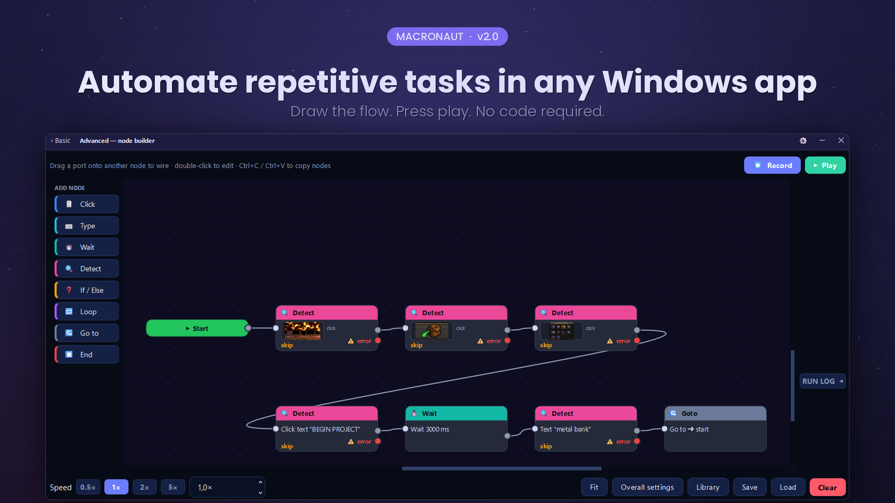

Automate anything on Windows.
No code.
It opens as a plain auto-clicker — set the interval, press Start. When you need more, one click turns it into a canvas where you record your clicks and keystrokes, or draw the flow yourself. In any Windows app, including the ones with no API, no scripting and no plugins.
Windows 10 & 11 · one 78 MB file · no installer · no account · open source
Windows will say “Windows protected your PC”
on first run. It says that for any app without a signing certificate —
click More info, then Run anyway. Would rather check first?
Read the source — all of it is public, and
pyinstaller macronaut.spec builds it yourself.
SHA-256 of this download (2.3.3)
8a23143a1878753a33e289bcd924e6f39429a3c8c44faf284f16f38900371a69
Check it in PowerShell before you run it:
Get-FileHash .\Macronaut.exe -Algorithm SHA256
This is the hash of the published file, taken from the same update.json the app verifies its own updates against. It is not a substitute for a signature — anyone who could replace the download could edit this page — but it does tell you the file arrived intact.

If you do the same clicks twenty times a day
That is the thing this is for. If it really is just clicks, the screen it opens on is all you need. If the job has steps to it, you build it as a flow — boxes for the things it does, wires for the order they happen in. Either way there is no scripting language to learn, and nothing to install.
And it arrives with 5 automations already built, so the first one you run is one you did not have to make.
Record it once
Press record and work normally. Clicks, keystrokes, chords, scroll flicks and click-and-drag gestures all land on the canvas as editable steps. A swipe is recorded as a swipe, not as a click.
Watch it run
The running step lights up as it goes, with timings measured on your machine rather than guessed. Stop it from anywhere with a global hotkey, even while another window has focus.
Let it look at the screen
Wait until a button appears and then click it. Wait for words to show up, using Windows' own OCR. Every detection gets a found and a not found branch, so a flow can cope when things go wrong.
What it does
Everything here is in the app today — this is a description, not a roadmap.
Two faces, and you pick
Basic is an auto-clicker and nothing else: interval, mouse button, how many times, where. That is the whole screen, and it is free permanently.
Advanced is the node canvas, behind one link. Macronaut reopens on whichever of the two you closed it on, and each remembers its own size and place on screen — Basic parked in a corner beside the window it is clicking, Advanced as big as you like.

A canvas, not a script
Click, Move, Drag, Scroll, Type text, Key press, Wait, Detect, If / Else, Loop, Go to and Comment. Wire them up, colour-code them, group a region in a box and drag the whole thing at once.
Hold keys down
Press and release are separate steps, so a flow can hold W to keep moving while it clicks with the mouse. Anything still held is always released when the run ends, stops, or crashes.
Reaches apps that ignore input
Three selectable input backends, including SendInput scancodes and the Interception kernel driver — for programs that discard ordinary injected input and only believe a real keyboard.
One key per script
Bind different flows to different keys and launch any of them with a single press, without opening the window or touching what is on the canvas.
No installer, no Python
A single 78 MB .exe. It updates itself on
restart, verified by SHA-256, and needs no administrator rights to
run.
Open source, all of it
GPL v3. The input backends, the update checker, the licensing code —
read any of it, change it, or build the
.exe yourself instead of trusting mine.
Stays out of the way
Always-on-top when you want it, a tray icon when you don't, dark and light themes, and a layout that works from a small window to fullscreen.
Pricing
The free tier is a complete auto-clicker, not a trial. It has no timer, no watermark and no expiry, and it never will.
- The whole Basic auto-clicker
- Click, move, drag and scroll
- Type text and press keys, including chords
- Record what you do into an editable flow
- Waits, delays, loop counts and playback speed
- Global start/stop hotkey and script launcher keys
- All three input backends
- Flows of up to 20 steps — not yet; there is no limit today
- Watching the screen and branching — included for everyone right now
- Everything in Free, with no step limit
- Wait for an image to appear, then click it
- Wait for text, read with Windows OCR
- Wait for a pixel to change colour
- If / Else branching on what it found
- Loops and Go to
- Every future update, at no extra cost
- Use it on every computer you own
Nothing to buy yet. Pro switches on once Macronaut has enough people using it to be worth it.
One payment. Yours forever, on every computer you own. Not a subscription. Something broken, something missing, or it does not do what this page says? Write to gerbenvanpoucke0@gmail.com — that is where feedback goes, and where a refund comes from once there is anything to refund. One person reads it.
Questions
I just want an auto-clicker. Do I have to learn the node thing?
No. Macronaut opens on Basic, which is a plain auto-clicker: set the interval, pick a button, choose how many times, press Start. No nodes, no wires, no diagram. The canvas is behind an Advanced link if you ever want it, and Macronaut reopens on whichever of the two you closed it on. Basic is free, permanently.
Is the free version a trial?
No. It does not expire, it has no watermark, and it does not nag you. The whole Basic auto-clicker is free and always will be. Clicking, typing, dragging, scrolling and recording are free permanently too, in flows of up to 20 steps. Pro adds the steps that watch the screen and branch on what they find.
Do I have to build everything myself?
No. It arrives with 5 automations already built and waiting in the library — an auto-clicker, a clicker that stops after a set number of clicks, one that clicks once every 30 seconds to keep a session awake, one that types a block of text for you, and one that presses a key over and over. None of them need setting up: open one and press Play. Each carries a note on the canvas saying what it does and which part to change.
How is this different from AutoHotkey?
AutoHotkey is a scripting language, and a good one — if you are willing to learn it. Macronaut is the same idea without the code: you record what you do, or drag steps onto a canvas and wire them together. The trade is real. AutoHotkey will do things Macronaut cannot; Macronaut you can use this afternoon. There is a side-by-side comparison, including what AutoHotkey still does better.
Will it work in a game?
Often, yes — but read the warning further down this page first, because many online games ban automation and can ban your account for it. Technically: some games ignore ordinary injected input, so Macronaut has three input backends, the lowest of which is a kernel driver that looks like a real keyboard. If one does not work, switch to the next.
Does it need an internet connection?
Only to check for updates, which you can turn off. Automations run entirely on your machine. Your licence key is verified offline — activating does not tell us anything, because there is nothing for it to tell.
What do you collect?
Nothing, unless you opt in to crash reports — and those contain the error, the version, your Windows version and which step was running. Never your scripts, your keystrokes, anything on your screen, or your name. Windows account names are stripped out of file paths before anything is even written to disk.
Can I use my licence on more than one computer?
Yes, on every computer you own. There is no activation limit and no machine fingerprinting — those mostly succeed at punishing the honest customer who bought a new laptop. Your e-mail address is inside the key, so please do not post it publicly.
Is it a subscription?
No. One payment, and that version and every future update are yours. If that ever changes it will change for new customers, not for you.
Why does Windows say it is unsafe?
Because it is not code-signed yet. SmartScreen warns about any new executable it has not seen before, signed or not, and a signing certificate has both a real cost and a procurement lead time. Click “More info” then “Run anyway”. Antivirus software is also occasionally suspicious of anything that sends keystrokes, which is unavoidable for a tool whose entire job is sending keystrokes. If you would rather not take that on trust, the source is public and you can build the .exe yourself — see the next answer.
Is Macronaut open source?
Yes, all of it, under the GNU GPL v3. Every line that goes into the download is on GitHub: the input backends, the licensing code, the update checker, the lot. You can read it, change it, and share what you change. You can build it yourself too, with “pyinstaller macronaut.spec” — though your .exe will not be byte-identical to this one. PyInstaller stamps a timestamp into its output and does not order its archive deterministically, so two builds from the same tree on the same machine differ. That means a hash comparison against this download will never match, and that is PyInstaller rather than evidence of anything. What is checkable is the source — all of it — and the SHA-256 published under the download button, which tells you the file you got is the file that was published.
It was closed source before. What changed?
The commonest reason people gave for not downloading it. Macronaut is an unsigned executable that installs a global keyboard hook, and “trust me” is not a good answer to somebody who has just been shown a SmartScreen warning about it. Nothing else changed: same app, same price of nothing, same person maintaining it.
What happens to my flows if I do not buy Pro?
Nothing. They stay on your disk, they open, they edit and they save. A flow that uses Pro steps simply will not run until it is licensed — you never lose work, and you can always take the Pro steps out and run the rest.
Is there a refund?
Yes. If it does not do what this page says it does, e-mail gerbenvanpoucke0@gmail.com and I will refund you. It is a one-person operation, so you will be talking to the person who wrote it.
How do I get in touch?
gerbenvanpoucke0@gmail.com. That is also where a lost licence key gets resent, and where a bug report actually reaches somebody — it is one person, not a ticket queue.
What are the system requirements?
Windows 10 or 11, 64-bit. Nothing else — no Python, no .NET, no runtime, no installer. It is a single 78 MB file that you can put anywhere and delete when you are done.
Before you automate a game. Macronaut sends real keyboard and mouse input. Many online games and services forbid automation in their terms of service, and using it against them can cost you your account. That is your call to make — please read their rules first.
Windows will warn you on first run. Macronaut is not code-signed yet, so SmartScreen shows "Windows protected your PC" for new downloads. Click More info → Run anyway. Signing is on the roadmap. In the meantime the better reassurance is that you do not have to take my word for any of it: the source is public, and you can build the executable yourself.